|
This example consists on giving execute permissions to a WWSD List and its detail (see Work With Pattern for Smart Devices (WWSD)). The idea for SD panels is the same.
Important Note: In this version it´s not possible to manage the List and Detail permissions independently (as well as all the sections of the Detail) That is to say, the permissions apply to all or none of them as a group.
Suppose you have a "Novels" transaction, where Work With Pattern for Smart Devices has been applied. The purpose is to allow only authorized users to see the "Novels" List and view the detail.
1. Set Enable Integrated Security Property = TRUE and Integrated Security Level Property = Authorization.
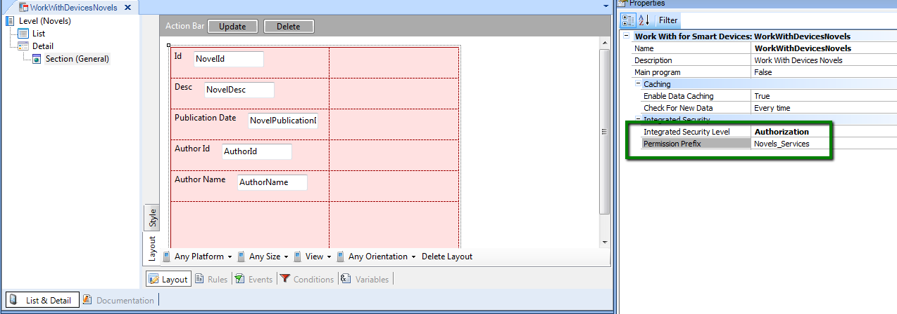
Figure 1.
2. Define a Role where the Permission is defined with the corresponding Permission Access Type. The permission is <prefix>_execute where prefix is the Permission Prefix specified for the WWSD object.
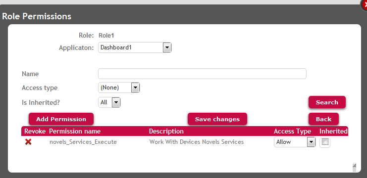
Figure 2.
As a result, only users who have this role can execute the "Work With Devices Novels" Object in order to display the list of Novels and view the detail of each of them.
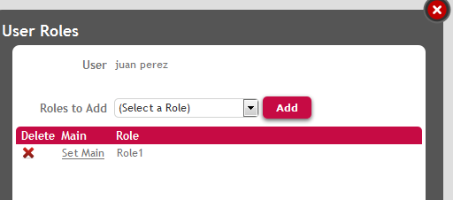
Figure 3. User´s role which allows to execute Work With Devices Novels
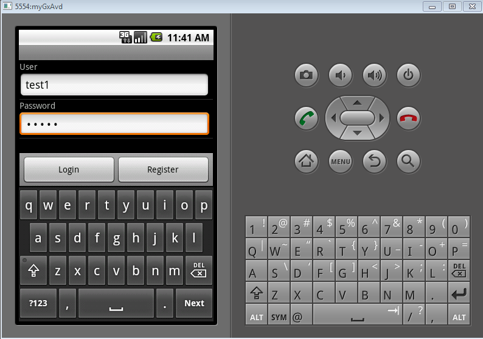
Figure 4. Execution GAMSDLogin
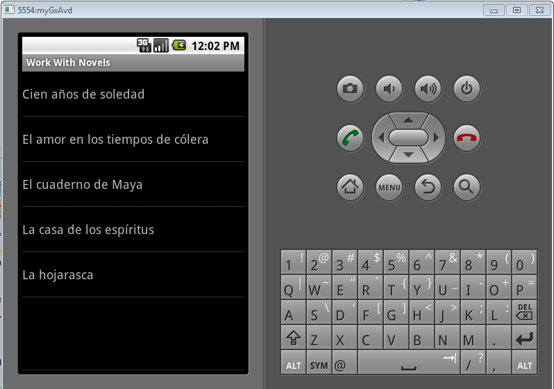
Figure 5.Execution Work With Devices Novels
In case of Dashboards, the permissions are not verified, that´s why the only available values for Integrated Security Level Property are "none", and "Authentication" in this case.
If you configure "Authentication" value in this property for Dashboard objects, the behavior is not the same as the behavior for SD panels or WWSD panels: when trying to execute the Dashboard for the first time, the Login Object for SD will execute. But in the next executions, the validity of session is not checked for Dashboards, so the login object will display again only when the user tries to execute another private object which is called from the Dashboard.
Example: Suppose you have the following Dashboard object, with three items :
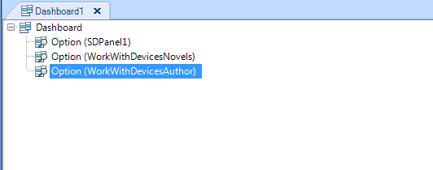
Figure 6. Dashboard at design
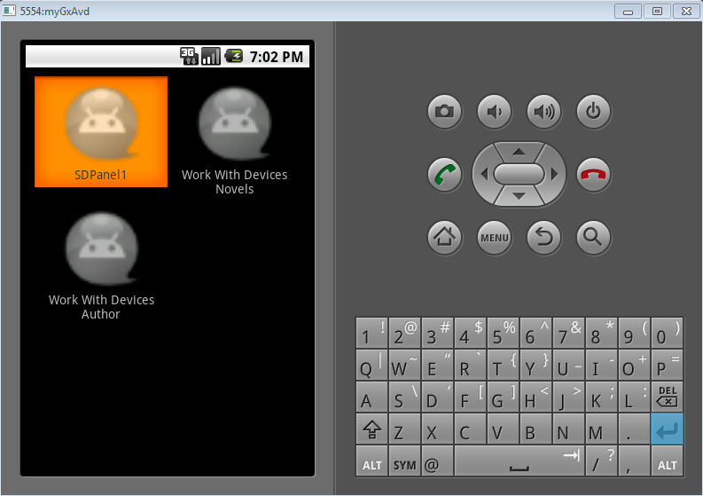
Figure 7. Dashboard at execution
These objects (SDPanel1, WorkWithDevicesNovels and WorkWithDevicesAuthor) check permissions independently, depending on the settings of Integrated Security Level Property for each object.
If Integrated Security Level Property = none, Authentication is not required to execute this object.
If Integrated Security Level Property = Authentication, only authenticated users can execute the object. The Authentication will be checked the first time when executing the Dashboard, afterwards (when session times out), Authentication is checked when this object is executed.
If Integrated Security Level Property = Authorization, only authenticated and authorized users can execute the object. The Authentication will be checked the first time when executing the Dashboard, afterwards (when session times out), Authentication is checked when this object is executed.
Any combination is valid.
If the three of them require Authorization, you need to define a Role where the corresponding permissions are defined, with the desired Permission Access Type.
If the user is not authorized to execute "WorkWithDevicesAuthor" the following error will display on the screen:
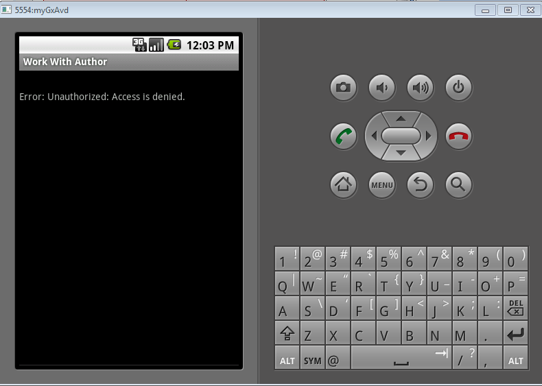
Figure 8. Permission Denied on Work WithDevices Author
Otherwise, the execution can be redirected to the object specified in Not Authorized Object for SD property.
After configuring the permissions on the user´s role, as the following figure shows:
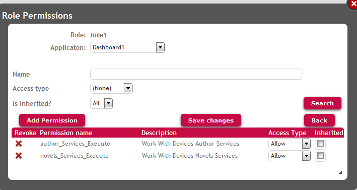
Figure 9. user' srole permissions for executing WorkWithDevicesAuthor
The user will be able to execute WorkWithDevicesAuthor:
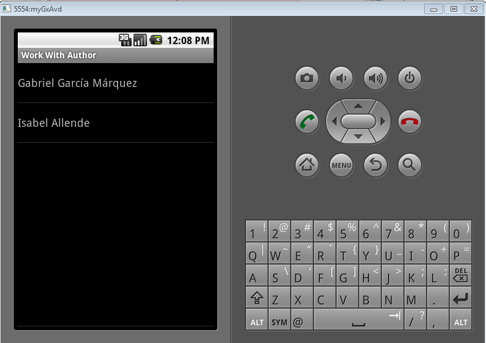
Figure 10. Executing of WorkWithDevicesAuthor
And also, execute the Detail and all its Sections:
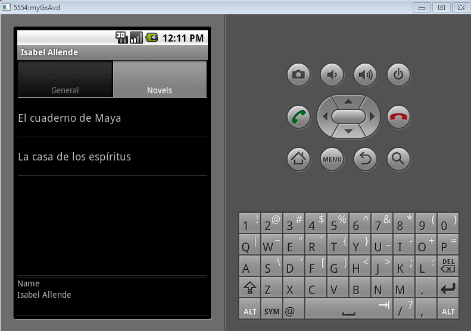
Figure 11. Naviganting the detail of WorkWithDevicesAuthor
Note that the _same permission_ allows the user to execute the Detail and all the sections inside the Detail (view Section General and Section Novels), see the pattern design in the following figure:
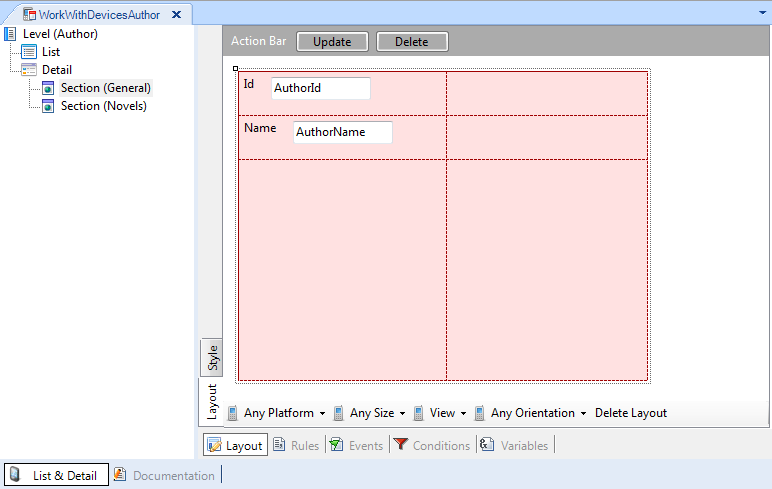
Figure 12. WorkWithDevicesAuthor Pattern design
Note:
Note that the actions in WWSD panels (insert, update, delete) are related directly to the Business Component associated to the WWSD and not the WWSD itself. That means that, if you apply Work With Pattern for Smart Devices to a transaction ("Novels"), the "Novels" transaction is automatically saved as Business Component exposed as REST Web Services. In order to control permissions over the actions insert, update, delete, you need to declare permissions over the Business Component itself. See How to: Permissions in SD applications, CRUD restricted and How to: Permissions in SD applications, WW and CRUD restricted for details.
The permissions over the list and view of the item´s list is managed in the WWSD object as shown in this paper.
GAM Permissions
Full Control Permissions and inheritance
GAM Roles
GAM Authorization Scenarios
|